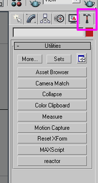
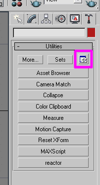
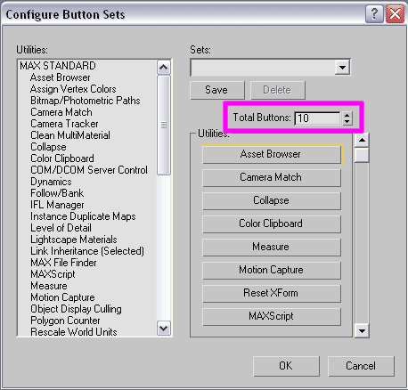
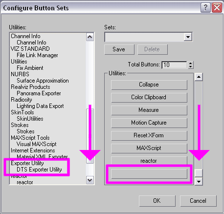

Downloading the File PackThe file pack includes the exporter script as well as the necessary .max files and textures used in the "Getting Started" tutorials. Note that there are two versions of the file pack available for 3DS Max. The exporter in each zip will only work for the versions of max it was compiled for, so make sure you download the proper file. If the above links fail, an additional download site for the exporter utility (works with Max 6.0-7.0): http://www.theatomizer.com/ The directory you choose to save the file pack to is unimportant, so save it to wherever it's easiest for you to find. |
Installing the Exporter
To install the exporter, simply place the file "max2dtsExporter.dle in the 3DSMAX/Plugins/ directory. Make sure that 3DS Max isn't running, as it loads plugins on start up. After you place the file in the plugins directory, start up max. Once 3DS Max as started, we need to make a button for the exporter. To do this, click on the Utilities Panel, which is the little hammer tab on the far right.  Next, we want to click the "Configure Button Sets" button.  This will bring up the Configure Button Sets dialog. The first thing we need to do add a button to the Total Buttons number.  Next scroll down the list of buttons of the right to find the empty button we just created, then scroll down the Utilities list on the left until you see the DTS Exporter.  Drag the DTS Exporter Utility to the empty button. DTS Exporter Utility will then be written in the button. Hit OK. That's it, the exporter is installed! Lets move on to Lesson 2: Exporting a Simple Shape. |